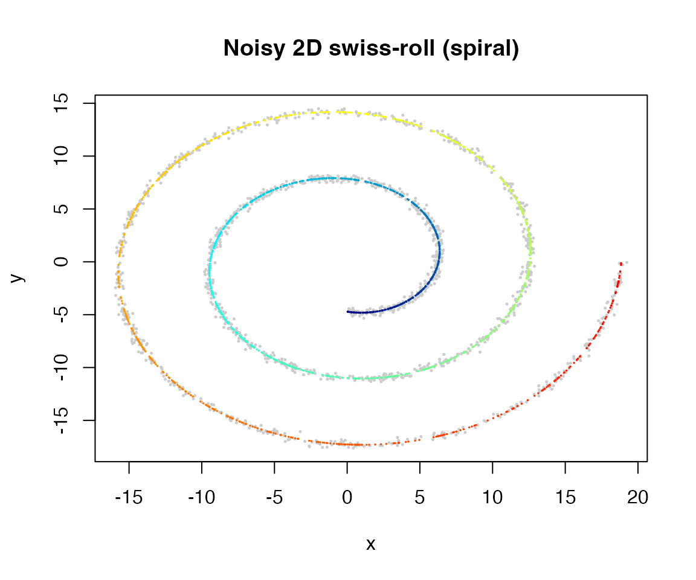
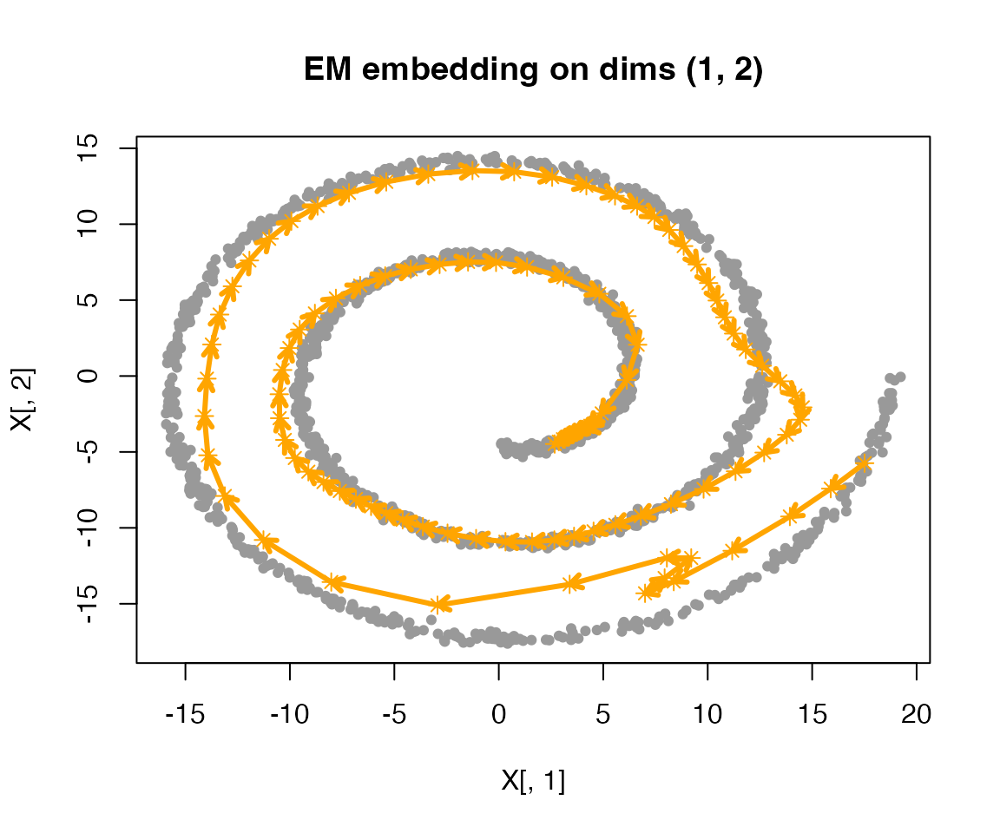
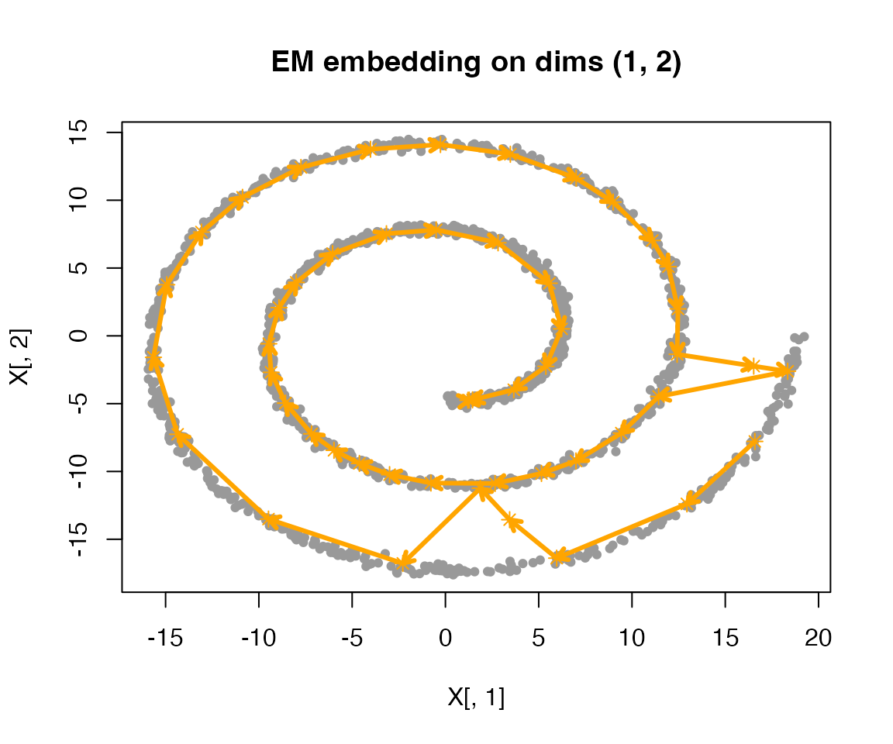

Intro.RmdsmoothEMr fits a Gaussian mixture model with a
structured (smoothness) prior on the component means. Let
be the observed vector for
,
and let
be the latent component label. The observation model is
To encourage ordered / smooth transitions across components , we place a multivariate normal prior on the stacked mean vector :
where the precision matrix encodes the desired structure across components. For computational efficiency, we require to be sparse so the prior is a GMRF (Gaussian Markov random field). Many common GMRF priors can be interpreted as discrete analogues of continuous GP priors. Equivalently, the M-step solves a penalized optimization problem with quadratic penalty .
The default choice in smoothEMr is a
-th
order random-walk (RW) prior, with
where is the precision matrix induced by -th order discrete differences. Larger enforces stronger smoothness across neighboring components.
Equivalently, letting , the RW2 penalty can be written as where is the second-difference matrix with rows .
By default, smoothEMr assumes
is diagonal and shared across components (homoskedasticity), but the
framework can be extended to accommodate heteroskedasticity or other
covariance structures.
Fix a smoothing strength and a sparse precision matrix . Let stack all component means. We seek a MAP estimate by maximizing the log-posterior (up to an additive constant) over :
where collects terms that do not depend on .
The smooth-EM algorithm performs coordinate ascent on an ELBO (evidence lower bound) of the form where is the entropy term.
Relationship between ELBO and the objective. For any , and equality holds when (i.e., equals the posterior responsibilities). Thus, maximizing the ELBO provides a monotone lower-bound ascent procedure for the MAP objective .
Given current parameter values, each iteration alternates:
E-step (update ):
M-step (update ): update and in closed form given , and update by maximizing
With fixed, the ELBO is non-decreasing over iterations; moreover, because each E-step makes the bound tight at the current parameters, the MAP objective is also non-decreasing.
We simulate data from a spiral (swiss-roll) embedded in 2D space, then fit a smoothEM model.
sim <- simulate_swiss_roll_1d_2d(n = 1500, sigma = 0.2, seed = 123)
plot(sim$obs$x, sim$obs$y, pch = 16, cex = 0.35, col = "grey80",
xlab = "x", ylab = "y", main = "Noisy 2D swiss-roll (spiral)")
pal <- colorRampPalette(c("navy", "cyan", "yellow", "red"))(256)
t_scaled <- (sim$t - min(sim$t)) / (max(sim$t) - min(sim$t)) # in [0,1]
col_t <- pal[pmax(1, pmin(256, 1 + floor(255 * t_scaled)))]
points(sim$truth$x, sim$truth$y, pch = 16, cex = 0.25, col = col_t)
To fit the model, we first initialize the smoothEM algorithm using a
given initialization method. Here, we use fiedler
initialization and fix the smoothing parameter lambda to
10.
set.seed(123)
fit <- initialize_csmoothEM(
X = as.matrix(sim$obs),
method = "fiedler",
adaptive = FALSE,
lambda = 10
)
fit
#> Fitted csmoothEM object with RW(2) prior along K = 50
#> -----
#> n = 1500, d = 2, modelName = homoskedastic
#> iter = 1; init_method = fiedler; adaptive = none;
#> lambda_vec: range=[10, 10], mean=10, relative = TRUE
#> ELBO last = -10676.855810; penLogLik last = -10628.574088; ML/C last = -10629.182592The key function do_csmoothEM() runs smooth-EM updates
for a given number of iterations.
fit <- fit |>
do_csmoothEM(iter = 30)
plot(fit)
We can also inspect ELBO values over iterations:
plot(fit, plot_type = "elbo")Optionally, smoothEMr can update during the EM iterations. Unlike the MAP updates performed when is fixed, here we aim to optimize the marginal likelihood
The marginal likelihood is generally intractable. Using the ELBO as a surrogate for yields an approximate marginal likelihood
Because the ELBO is (locally) quadratic in and the prior is Gaussian, we can further obtain a closed-form Laplace approximation. Let Then the collapsed objective is
To implement adaptive estimation of
,
we just need to use adaptive = "ml" in the initialization
step.
set.seed(123)
fit_ml <- initialize_csmoothEM(
X = as.matrix(sim$obs),
method = "fiedler",
adaptive = "ml"
)
fit_ml
#> Fitted csmoothEM object with RW(2) prior along K = 50
#> -----
#> n = 1500, d = 2, modelName = homoskedastic
#> iter = 1; init_method = fiedler; adaptive = ml;
#> lambda_vec: range=[9.5, 14.1], mean=11.8, relative = TRUE
#> ELBO last = -10672.494762; penLogLik last = -10623.434999; ML/C last = -10628.660896
fit_ml <- fit_ml |>
do_csmoothEM(iter = 30)
plot(fit_ml)
plot(fit_ml, plot_type = "elbo")